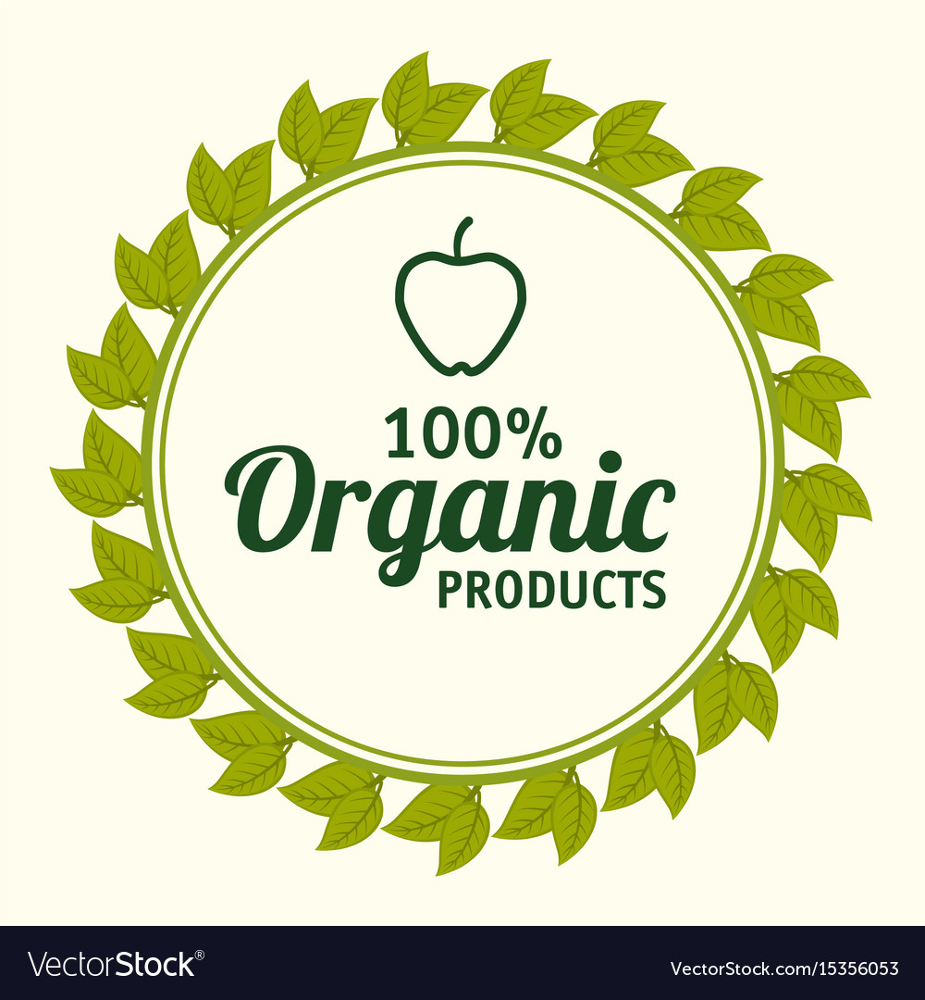

Discover Our Range of Organic Products
At Nature's Delight, we are committed to providing the finest organic products sourced directly from nature. Our mission is to offer products that are not only healthy but also environmentally sustainable.
Whether you're looking for fresh produce, dairy, snacks, or beverages, we have everything you need to maintain a healthy lifestyle. We believe in transparency, quality, and supporting local farmers and producers.
Why Choose Organic?
Organic products are grown without the use of synthetic pesticides, fertilizers, or genetically modified organisms (GMOs). Choosing organic means you're choosing to support a healthier environment and better health for you and your family.
Here are some benefits of choosing organic:
- Healthier for You: Organic foods often have more beneficial nutrients, such as antioxidants, than their conventionally-grown counterparts.
- Better for the Environment: Organic farming practices reduce pollution, conserve water, reduce soil erosion, increase soil fertility, and use less energy.
- Support for Local Farmers: Buying organic helps support local farmers and promotes sustainable agriculture.
- No GMOs: Organic food is non-GMO, which means it’s produced without genetic engineering.
Featured Products
Organic Apples
Crisp and sweet, our organic apples are perfect for a healthy snack or baking.
Organic Carrots
Our organic carrots are full of flavor and nutrients, perfect for salads or snacking.
Organic Milk
Rich and creamy, our organic milk comes from cows raised without antibiotics or synthetic hormones.
Organic Granola Bars
These bars are a perfect on-the-go snack, made with wholesome ingredients.
Customer Testimonials
"Nature's Delight has completely transformed the way I eat. The quality and taste of their products are unmatched!" - Sarah L.
"I love shopping here because I know I'm getting the best organic products available. Plus, the staff is so friendly and knowledgeable!" - Mark T.
Visit Us
We are located at 123 Greenway Blvd, Nature City. Our store is open Monday to Friday from 9am to 6pm, and Saturday from 10am to 4pm. We look forward to seeing you!
Follow us on social media to stay updated on our latest products and promotions: